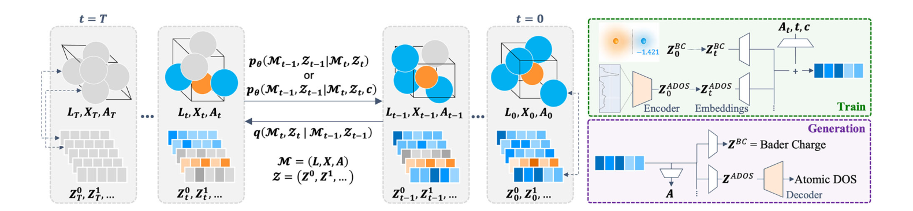
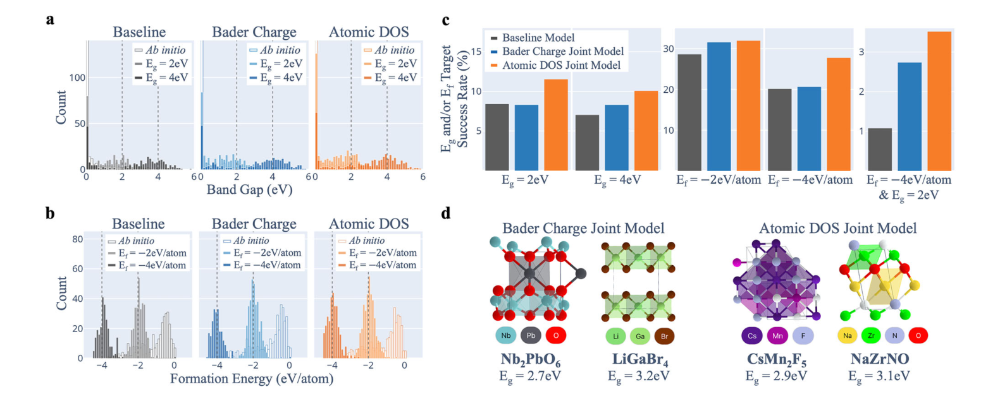
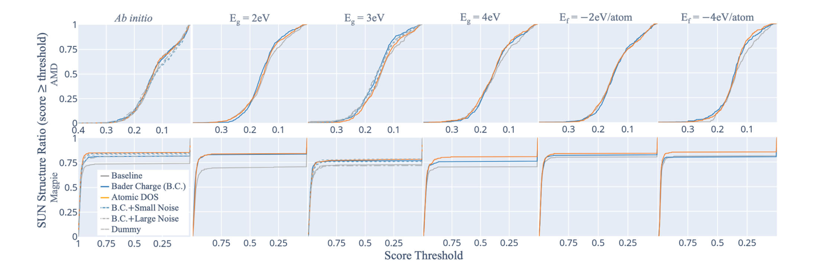
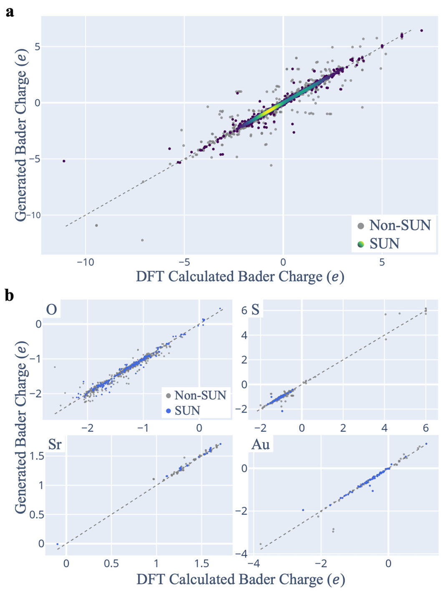
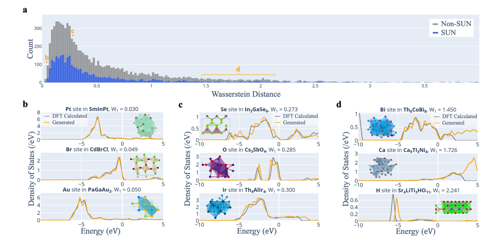

MatterGen-e⁻：把局部电子态一起生成，怎样改善晶体逆向设计
论文原文 ↗论文：Ibuki Okuda、Izumi Takahara、Teruyasu Mizoguchi，Inverse materials design via joint generation of crystal structures and local electronic descriptors，npj Computational Materials 12, 332（2026）。原文与 DOI ·
生成一个看起来合理的晶体，与生成一个“带隙约为 2 eV、形成能约为 −4 eV/atom”的晶体，是两件难度不同的事。后一项任务需要把采样推向目标性质区域，同时保住结构稳定性和候选多样性。作者观察到，只生成元素、坐标和晶格的模型加入性质条件后，往往会损失这些结构质量。
这项工作的切入点很直接：材料性质与成键、局部电荷和电子能级分布有关，生成过程何不同时描述这些电子信息？ MatterGen-e⁻ 在 MatterGen 的结构生成骨架上，增加逐原子的电子描述符，让晶体几何和局部电子态共同去噪。论文分别研究 Bader 电荷和原子态密度两种选择，比较它们怎样改善目标命中和生成结构质量。
一、生成对象怎样从“晶体结构”扩展为“晶体加局部电子态”
晶体结构由三组变量描述：每个位置是什么元素、原子的分数坐标，以及周期晶格。普通结构生成模型学习这三组变量之间的关系；MatterGen-e⁻ 再给每个原子附上一份电子信息。
第一种是 Bader 电荷。它把电子密度按空间中的原子区域划分，再由区域内的电子数得到该原子的净电荷。因此同一种元素处在不同成键环境中，也会有不同电荷。它在模型里只需要每个原子一个数。
第二种是 原子态密度（atomic DOS），即某个原子在不同能量处贡献了多少电子态。相较于一个净电荷数，它保留了更丰富的能量分布与成键信息。作者将费米能级设为零，整理 −15 至 5 eV 范围内的谱线，使用 512 个能量采样点。为便于共同生成，先训练卷积自编码器，把整条谱线压成每个原子 30 个潜变量；生成结束后，再用解码器将这些数恢复为谱线。
这里的潜变量是谱形的压缩表示。模型生成时处理的是这些表示，最后才恢复可直接观察的 DOS 曲线。论文比较的是 Bader 电荷联合模型、原子 DOS 联合模型和只生成结构的基线模型。

图1｜联合生成流程。结构变量与每个原子的电子描述符一起加噪、一起恢复；DOS 先编码为潜变量，再在生成完成后解码成谱线。
二、从训练样本到性质定向候选，流程怎样接起来
训练数据来自 MP-20 中同时具有电子密度和 DOS 的晶体，其中训练集含 19,571 个结构。每个样本都有元素、坐标、晶格，以及从对应电子结构计算中整理出的逐原子电荷或 DOS 标签。
训练时，程序分别扰乱这些变量。原子身份被扰乱，位置和晶格被加噪，电子描述符也被加噪。网络接收同一时刻的结构、电子描述符、去噪进度和可选的目标性质条件，学习怎样把它们一起恢复。它以 GemNet-T 图神经网络为共享骨架：每个原子的内部表示会接收周围原子的消息，再由不同输出头预测结构更新和电子描述符更新。电子信息在每一步都参与共同表示，因而能够影响结构生成的轨迹。
使用模型时则从噪声状态开始，指定目标带隙、形成能，或同时指定两者，逐步生成元素、坐标、晶格与电子描述符。电荷联合模型在去噪后期逐步施加总电荷归零的修正；DOS 模型则逐步把潜变量收回自编码器所用的范围。完成后得到晶体结构，以及与它同时产生的电荷或谱线。
随后，作者对生成晶体进行 DFT 结构优化和性质计算，再判断它们是否真正达到目标。每种模型、每组条件均生成 1,024 个候选。比较中首先筛选稳定、独特且新颖的结构，简称 SUN：稳定要求优化后结构相对竞争相凸包的能量不高于 0.1 eV/atom；独特表示生成批次内去重；新颖表示与本研究采用的 MP-20 参考结构不匹配。作者还用基于氧化态与电负性规则的组成筛选，另外报告满足有效性条件的 VSUN 结果。
目标成功率以全部 1,024 个候选为分母，同时要求候选通过 SUN 筛选，并落入目标窗口：带隙允许偏差 ±0.5 eV，形成能允许偏差 ±0.5 eV/atom。这把“数值接近目标”与“得到可继续研究的新晶体”接在了一起。
三、主要结果：稀疏目标区域与双目标生成最值得关注
1. 原子 DOS 提高了多种条件下的目标命中率

图2｜带隙、形成能及双目标生成的比较。灰色为结构基线，蓝色为电荷联合模型，橙色为 DOS 联合模型；c 比较通过 SUN 筛选且达到指定目标的候选比例，d 给出带隙条件下的生成结构实例。
在带隙目标为 2 和 4 eV 时，DOS 联合模型把成功率分别从 8.4% 提高到 11.5%、从 7.0% 提高到 10.1%。Bader 电荷在这两项上的收益较小，说明更丰富的能量分辨电子态，对带隙定向生成尤其有帮助。
形成能为 −4 eV/atom 的目标更有代表性：训练数据中，落在该目标 ±0.5 eV/atom 范围内的结构仅占 2.6%。在这一稀疏区域，DOS 联合模型的成功率为 27.7%，高于基线的 20.1%；同时 SUN 结构比例从 23.1% 增至 29.9%。模型不仅更容易接近形成能目标，也留下了更多稳定、独特且新颖的候选。
同时约束带隙与形成能时，差别更明显。
| 同时施加的目标 | 结构基线 | 电荷联合模型 | DOS 联合模型 |
|---|---|---|---|
| 带隙 2 eV，形成能 −4 eV/atom | 1.1% | 2.7% | 3.5% |
| 带隙 3 eV，形成能 −4 eV/atom | 0.9% | 2.1% | 3.5% |
这些比例均为通过 SUN 筛选并同时满足两项目标的成功率。对于训练数据中很少出现的性质组合，联合生成使成功率达到基线的约 2—4 倍，体现出作者想解决的核心问题：在更严格的逆向设计要求下，保持性质定向和结构质量。
2. 电子描述符带来的收益，既包括搜索空间，也包括化学合理性

图3｜SUN 候选相对参考数据的连续新颖性。上排用几何距离描述结构差别，下排用组成指纹距离描述化学组成差别；曲线给出超过相应新颖性阈值的候选比例。
作者进一步用连续距离衡量生成材料离已知材料有多远。结构距离来自周期结构的近邻几何描述，组成距离来自元素组成指纹。联合模型在多个性质条件下保持较高的新颖性，尤其在形成能 −4 eV/atom 这类稀疏目标下，缓解了基线向较窄区域收缩的现象。
为什么电子描述符有这种作用？作者用真实电荷、加噪电荷和随机虚拟变量进行了对比。增加任意随机变量都可能增加生成变化，真实电子信息则进一步改善稳定性、组成有效性与性质命中。以 3 eV 带隙目标为例，真实电荷联合模型的成功率为 8.3%，而两种加噪电荷模型和随机变量模型分别只有 4.0%、4.3% 和 4.7%。因此论文强调的设计原则是：扩展生成变量时，变量中可靠的物理信息决定了多样性怎样转化为有用的材料候选。
两种电子表示还显示出不同侧重。电荷表示更直接关联局部电荷平衡与组成合理性；DOS 包含能量分辨的电子态信息，更明显地帮助稳定性与性质定向。它们提供了从紧凑标量到较丰富谱线的两种选择。
3. 随结构生成出来的电子态，与 DFT 有多接近

图4｜生成的 Bader 电荷与 DFT 结果比较。a 汇总各原子，b 分别展示 O、S、Sr、Au；接近对角线表示两者吻合，SUN 结构中的电荷更集中于参考关系。
对无条件生成的晶体重新进行 DFT 计算后，作者比较了模型同时给出的电荷。全部生成结构上的平均绝对误差为 0.072 e，在 SUN 子集上降为 0.054 e，多数元素的误差小于 0.1 e。这意味着共同生成的电荷确实学到了结构与局部电子分布之间的关系。

图5｜生成 DOS 的谱形精度。a 给出谱线差异的分布；b、c、d 分别展示差异很小、接近中位数和差异较大的样例，橙线为生成结果，灰线为 DFT。
DOS 比一个电荷数更复杂。作者先将谱线归一化，再用 Wasserstein 距离衡量谱形差别；这一距离可理解为把一条能量分布搬成另一条所需的总体移动量。接近误差中位数的样本能恢复谱线的大体轮廓，峰位与相对强度仍随样本变化。精度还明显依赖元素：过渡金属的 d 电子谱形相对更容易学习，而 B、C、N 等轻非金属因局部成键引起的谱形变化更丰富，生成差异较大。这对应摘要所强调的电子态生成结果：电荷已有较好的定量吻合，DOS 则主要体现粗粒度谱形的学习能力。
四、这项工作给材料生成带来了什么
MatterGen-e⁻ 的核心贡献，是把局部电子态从结构完成后的附加预测，前移为生成过程本身的一部分。目标性质、晶体几何与局部电子信息在共同去噪中相互关联，从而更容易生成兼顾目标性质、稳定性和新颖性的候选。
对于 AI for Materials，这提出了一个值得继续探索的方向：改进逆向设计，不仅可以改变网络结构或优化采样算法，也可以重新选择“模型究竟应该共同生成哪些物理量”。这篇论文用逐原子电荷和 DOS 给出了具体实现，并通过性质定向、结构质量及电子态精度三组比较，将这一思路接到了可计算的材料设计结果上。
原始摘要完整中文翻译
无机晶体的逆向设计，即在保持多样性与物理合理性的同时生成满足目标性质的结构，仍比无条件从头生成更具挑战，因为性质条件可能损害当前生成模型在其他情况下能够达到的结构质量。我们提出一种扩散框架，通过共享的得分网络，对晶体结构变量和逐位点的局部电子描述符进行联合去噪。作为代表性描述符，我们采用 Bader 电荷和原子态密度（原子 DOS）。在以带隙和形成能为条件的生成，以及二者同时作为条件的生成中，联合模型在多数目标条件下均取得高于仅生成结构基线的成功率，同时增加了满足独特性、新颖性、热力学稳定性和物理有效性的生成结构比例。采用受噪声扰动的 Bader 电荷以及不含物理信息的虚拟变量进行的对照实验表明，这些收益要求联合生成的变量忠实反映真实局部电子结构。在稳定、独特且新颖的结构上，生成的 Bader 电荷与 DFT 参考值一致，平均绝对误差为 5.4 × 10⁻² e；对于原子 DOS，其精度分布中位数附近的生成结果能够捕捉 DFT 参考谱线的粗粒度轮廓，尽管更精细的特征和精度随元素种类而变化。这些结果确立了局部电子描述符作为有效生成变量的作用，其承担两项互补功能：通过提高结构多样性，拓宽所探索的材料空间；并在联合去噪中引导结构轨迹走向电子上合理的构型，从而缓解性质定向与结构质量之间的权衡。